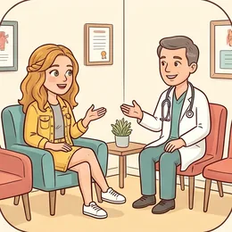
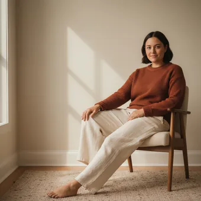
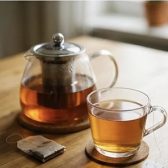
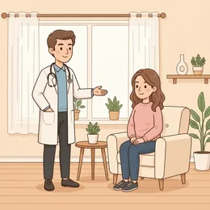
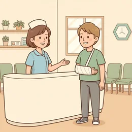

deutschoderwas · Sprechclub · Woche 3 · Strang A · Teil 1 ·
Wo tut es weh? Körper und Beschwerden
Letzte Woche hast du den Termin gemacht. Heute sitzt du im Sprechzimmer — und musst in zwei Minuten sagen, was los ist. Die gute Nachricht: Dafür reichen zwölf Wörter und ein einziger Satzbau.
Dein Niveau
Gleiches Thema, andere Sätze. Wechsle jederzeit — probier ruhig beide Seiten aus.
Zwei Minuten, in denen alles gesagt sein muss
Die Ärztin fragt: „Was führt Sie zu mir?“ Jetzt zählt nicht schönes Deutsch, sondern die richtige Reihenfolge: wo, seit wann, wie schlimm. Mehr will sie im ersten Satz gar nicht wissen.

Wann warst du zuletzt beim Arzt? Warum?
Gehst du schnell zum Arzt oder wartest du lieber ab?
Was machst du zu Hause, wenn du krank bist?
Wie erklärst du etwas, für das du das deutsche Wort nicht kennst?
Was ist schwieriger: die Krankheit beschreiben oder die Rückfragen verstehen?
Wie viel erzählt man in deinem Land dem Arzt von sich selbst?
🩺 Die drei Angaben, die immer kommen:Wo? — Mein Hals tut weh. · Seit wann? — Seit drei Tagen. · Wie schlimm? — Beim Schlucken sehr. Wer die drei parat hat, kommt durch jedes Gespräch.
Ein Wort fehlt? Zeig hin und beschreib es
Kein Arzt erwartet Fachwörter. „Hier tut es weh“ plus die Hand an der Stelle ist eine vollständige Antwort. Und wenn du das Wort halb kennst, hilft schon der Versuch.
Zeig auf drei Körperteile und sag die Wörter laut.
Was sagst du, wenn du das Wort nicht weißt?
Wie beschreibst du einen Schmerz, ohne ihn zu benennen?
Welche Fragen stellt ein Arzt, die man leicht falsch versteht?
💡 Die Notlösung, die immer geht:Hier tut es weh. · Das habe ich seit … · Es fühlt sich an wie … — drei Sätze, mit denen du jeden Körperteil beschreiben kannst, dessen Namen du nicht kennst.
Zwölf Wörter für das Sprechzimmer
Sagt jedes Wort laut — und gleich den Beispielsatz hinterher. Zwei Sekunden pro Karte reichen.
der Kopf
„Mein Kopf tut seit gestern weh.“
💡 Daraus wird ein festes Wort: die Kopfschmerzen — immer im Plural. Ich habe Kopfschmerzen.
der Hals
„Mein Hals tut beim Schlucken weh.“
💡 Hals meint außen den Nacken und innen den Rachen. Beim Arzt reicht: Mein Hals tut weh. — er schaut dann selbst nach.
der Bauch
„Mir tut der Bauch weh.“
💡 Umgangssprachlich für alles zwischen Magen und Darm. Genauer: der Magen (oben) und der Darm (unten).
der Rücken
„Ich habe seit einer Woche Rückenschmerzen.“
💡 Die häufigste Beschwerde in Deutschland. Auch: der Nacken (oben) und das Kreuz (unten, umgangssprachlich).

das Bein
„Mein linkes Bein tut beim Laufen weh.“
💡 Plural: die Beine. Und dazu gehören das Knie, der Fuß (Plural: die Füße) und der Zeh.
die Schmerzen
„Ich habe starke Schmerzen im Rücken.“
💡 Fast immer im Plural. Und die Stärke dazu: leicht, stark, unerträglich. Mit in + Dativ für den Ort.
😖
wehtun
„Was tut Ihnen denn weh?“
💡 Trennbar und mit Dativ: Mir tut der Kopf weh. Nicht „Ich tue weh“ — das würde heißen, du tust jemand anderem weh.
🌡️
das Fieber
„Ich hatte gestern 39 Grad Fieber.“
💡 Ohne Plural. Fieber haben, Fieber messen. Ab 38 Grad sagt man Fieber, darunter erhöhte Temperatur.
🤧
der Husten
„Der Husten ist nachts am schlimmsten.“
💡 Das Verb: husten. Die Nachbarn im Wortfeld: der Schnupfen (Nase) und die Heiserkeit (Stimme).

die Erkältung
„Das ist nur eine Erkältung, keine Grippe.“
💡 Reflexiv als Verb: sich erkälten — Ich habe mich erkältet. Nicht verwechseln mit die Grippe, die ist deutlich schwerer.

die Beschwerden
„Welche Beschwerden haben Sie denn?“
💡 Das Wort, mit dem der Arzt fragt — immer Plural. Nicht dasselbe wie die Beschwerde (Singular), das ist die Reklamation.

untersuchen
„Ich untersuche Sie kurz, machen Sie bitte den Mund auf.“
💡 Nicht trennbar, obwohl es so aussieht: Der Arzt untersucht mich. Das Nomen: die Untersuchung.
💡 Spiel: Einer zeigt stumm auf einen Körperteil und macht ein Gesicht. Der andere sagt in zwei Sekunden den ganzen Satz: „Dir tut der Rücken weh.“ Wer zögert, gibt ab.
Drei Arten, dasselbe zu sagen
Für jede Beschwerde gibt es drei Sätze — und alle drei sind richtig. Darunter drei Satzpaare, bei denen fast alle danebenliegen.
😖
tut weh
Der Körperteil ist das Subjekt, du stehst im Dativ.
Mir tut der Kopf weh. · Der Hals tut mir weh.
🤕
ich habe … schmerzen
Ein zusammengesetztes Wort, immer im Plural.
Ich habe Kopfschmerzen. · Ich habe Rückenschmerzen.
📍
Schmerzen in …
Für Stellen ohne eigenes Wort — mit in + Dativ.
Ich habe Schmerzen im linken Arm.
✅ So sagt man es
Mir tut der Kopf weh.
Warum das stimmtwehtun steht mit Dativ: mir, dir, ihm, Ihnen. Der Körperteil ist das Subjekt und steht im Nominativ.
❌ So nicht
Ich tue den Kopf weh.
Das ProblemSo würde es heißen, dass du jemandem wehtust. Merksatz: Nicht ich tue weh — mir tut etwas weh.
✅ So sagt man es
Ich habe seit drei Tagen Husten.
Warum das stimmtseit steht mit Dativ und meint einen Zeitraum, der noch andauert: seit drei Tagen, seit einer Woche.
❌ So nicht
Ich habe vor drei Tagen Husten.
Das Problemvor drei Tagen ist ein Punkt in der Vergangenheit — da war es einmal so. seit heißt: es geht bis jetzt weiter.
✅ So sagt man es
Ich habe Kopfschmerzen.
Warum das stimmtDie Zusammensetzungen auf -schmerzen stehen immer im Plural und ohne Artikel: Kopfschmerzen, Bauchschmerzen, Halsschmerzen.
❌ So nicht
Ich habe einen Kopfschmerz.
Das ProblemDen Singular gibt es zwar, aber niemand sagt ihn. Beim Arzt klingt er, als hättest du das Wort gerade erfunden.
Es hängt nur davon ab, ob es das Wort gibt:
Der Körperteil hat ein kurzes Wort (Kopf, Hals, Bauch) → … tut mir weh oder -schmerzen, beides geht.
Die Stelle hat kein eigenes Wort → Ich habe Schmerzen in … + Dativ, und zeig dabei hin.
Du weißt das Wort nicht → Hier tut es weh. Das reicht vollkommen.
Es ist mehr ein Gefühl als ein Schmerz → Mir ist schlecht. · Mir ist schwindelig. — auch Dativ.
Und wenn der Arzt genauer fragt: stechend, drückend, ziehend, dumpf. Vier Wörter, mit denen jeder Schmerz beschrieben ist.
⚖️ Kurzübung: Einer nennt einen Körperteil, der andere sagt denselben Satz dreimal — mit tut weh, mit -schmerzen und mit Schmerzen in. Zehn Körperteile, dann tauschen.
Die vier Sätze für das Sprechzimmer
Begrüßen, Beschwerde nennen, Rückfragen beantworten, nach dem Weiteren fragen. In dieser Reihenfolge läuft fast jeder Arztbesuch ab.
1 · 👋 Ankommen Guten TagIch habe einen Termin um …Hier ist meine Versichertenkarte
So klingt esGuten Tag, mein Name ist Demir, ich habe einen Termin um zehn.
2 · 🤕 Beschwerde nennen Mir tut … wehIch habe … seit …Hier tut es weh
So klingt esMein Hals tut weh, seit drei Tagen. Und ich habe Husten.
3 · 💬 Auf Rückfragen antworten Ja, seit gesternNein, kein FieberNur beim Schlucken
So klingt esFieber hatte ich nicht. Es tut nur beim Schlucken weh.
4 · ❓ Nachfragen Was soll ich tun?Wie lange dauert das?Brauche ich ein Rezept?
So klingt esWas soll ich jetzt tun — und wie lange dauert das ungefähr?
1 · 👋 Ankommen mit Vorgeschichte Ich war im … schon einmal hierIch bin überwiesen wordenIch nehme regelmäßig …
So klingt esGuten Tag, Demir mein Name. Ich war im März schon einmal hier — damals ging es um dasselbe.
2 · 🤕 Genau beschreiben Der Schmerz ist eher stechendEs strahlt aus bis …Am schlimmsten ist es morgens
So klingt esDer Schmerz ist eher stechend und strahlt bis in die Schulter aus — am schlimmsten ist es morgens.
3 · 💬 Verlauf schildern Angefangen hat es …Erst war es …, dann …Besser wird es, wenn …
So klingt esAngefangen hat es vor zwei Wochen. Erst war es nur abends, inzwischen den ganzen Tag.
4 · ❓ Verständnis absichern Habe ich das richtig verstanden, dass …?Worauf soll ich achten?Wann sollte ich wiederkommen?
So klingt esHabe ich das richtig verstanden, dass ich es erst einmal beobachten soll? Worauf müsste ich achten?
Verb die Beschwerde Ort und Dauer Höflichkeit
🗣️ Sofort anwenden: Jeder beschreibt in genau drei Sätzen eine echte Beschwerde von sich — wo, seit wann, wie schlimm. Der Partner hört nur auf eins: Kamen alle drei Angaben?
Vier Gespräche — zwei Runden
Runde 1: Lest den Dialog zu zweit laut. Runde 2: Deckt die Zeilen von B ab und sprecht frei — die Hinweise reichen.
Dialog 1 · „Halsschmerzen“
Montagmorgen, Sprechstunde. Seit drei Tagen tut der Hals weh, seit gestern kommt Husten dazu.
A
Guten Tag, setzen Sie sich. Was führt Sie zu mir?
B
Mein Hals tut weh, seit drei Tagen. Und seit gestern habe ich Husten.
🗣️ Wo, seit wann — im ersten Satz. Genau darauf wartet der Arzt.tippen = Hilfe zeigen
A
Haben Sie Fieber gemessen?
B
Ja, gestern Abend 38,2. Heute Morgen war es normal.
🗣️ Zahlen sind gut. Sie ersparen dem Arzt drei Rückfragen.tippen = Hilfe zeigen
A
Tut es beim Schlucken weh?
B
Ja, vor allem beim Schlucken. Sonst geht es.
🗣️ vor allem zeigt: Es gibt einen Unterschied. Sehr nützlich beim Arzt.tippen = Hilfe zeigen
A
Ich schaue mal. Machen Sie bitte den Mund auf … ja, das ist gerötet.
B
Ist das schlimm? Was soll ich tun?
🗣️ Zwei kurze Fragen. Die erste beruhigt dich, die zweite bringt dich weiter.tippen = Hilfe zeigen
Dialog 2 · „Der Rücken“
Seit zwei Wochen zieht es im unteren Rücken. Es wird nicht besser — aber auch nicht schlimmer.
A
Guten Tag. Was kann ich für Sie tun?
B
Ich habe seit zwei Wochen Rückenschmerzen. Unten, links.
🗣️ Erst die Beschwerde, dann die Stelle. Zwei Wörter reichen: unten, links.tippen = Hilfe zeigen
A
Ist der Schmerz eher stechend oder dumpf?
B
Eher ziehend. Wenn ich lange sitze, wird es schlimmer.
🗣️ Vier Wörter für Schmerz: stechend, dumpf, ziehend, drückend. Eines davon passt immer.tippen = Hilfe zeigen
A
Arbeiten Sie viel am Schreibtisch?
B
Ja, den ganzen Tag. Bewegung habe ich fast keine.
🗣️ Ehrlich antworten. Der Arzt sucht die Ursache, nicht die Schuld.tippen = Hilfe zeigen
A
Dann probieren wir es erst einmal ohne Medikamente.
B
In Ordnung. Und wann sollte ich wiederkommen?
🗣️ Immer nach dem nächsten Schritt fragen — sonst gehst du ohne Plan raus.tippen = Hilfe zeigen
Dialog 3 · „Mir ist schlecht“
Bauchschmerzen seit gestern Abend, dazu Übelkeit. Du weißt nicht, ob es das Essen war.
A
Guten Tag. Erzählen Sie mal.
B
Mir tut der Bauch weh, seit gestern Abend. Und mir ist schlecht.
🗣️ Mir ist schlecht — auch Dativ, wie mir ist kalt und mir ist schwindelig.tippen = Hilfe zeigen
A
Haben Sie sich übergeben?
B
Nein, aber ich konnte nichts essen.
🗣️ Wenn du eine Frage nicht verstehst: Was heißt das genau? Das ist beim Arzt völlig normal.tippen = Hilfe zeigen
A
Was haben Sie gestern gegessen?
B
Nichts Besonderes. Reis mit Gemüse, wie immer.
🗣️ Nichts Besonderes ist eine vollständige Antwort — und dann ein Beispiel.tippen = Hilfe zeigen
A
Wahrscheinlich ein Magen-Darm-Infekt. Trinken Sie viel.
B
Und wenn es morgen nicht besser ist?
🗣️ Die wichtigste Frage überhaupt: Was ist der Plan, wenn es nicht klappt?tippen = Hilfe zeigen
Dialog 4 · „Am Empfang, ohne Termin“
Du hast keinen Termin, aber Zahnschmerzen seit der Nacht. Du musst erklären, warum es nicht warten kann.
A
Guten Tag. Haben Sie einen Termin?
B
Nein, leider nicht. Ich habe seit heute Nacht starke Schmerzen.
🗣️ Erst das Nein zugeben, dann den Grund. In dieser Reihenfolge.tippen = Hilfe zeigen
A
Es ist voll heute. Können Sie warten?
B
Ja, ich kann warten. Wie lange wäre es ungefähr?
🗣️ Bereitschaft zeigen und trotzdem fragen. Beides zusammen wirkt am besten.tippen = Hilfe zeigen
A
Bestimmt zwei Stunden.
B
Das ist in Ordnung. Soll ich hier bleiben oder darf ich kurz raus?
🗣️ Eine praktische Frage, die vielen nicht einfällt — und die viel Ärger spart.tippen = Hilfe zeigen
A
Bleiben Sie lieber da, wir rufen Sie auf.
B
Alles klar, vielen Dank für Ihre Mühe.
🗣️ Danke für Ihre Mühe — der Satz, mit dem man am Empfang gut ankommt.tippen = Hilfe zeigen
🎭 Und jetzt ihr: Spielt Dialog 1 noch einmal — aber der Arzt stellt drei Rückfragen, auf die B nicht vorbereitet ist. B darf jedes Mal nachfragen, statt zu raten.
🧩 Mir tut es weh: Dativ und seit
Zwei Regeln, und alle Sätze über den eigenen Körper sind gebaut. Beide sind kurz — und beide werden von fast allen zuerst falsch gemacht.
wehtun dreht den Satz um: Der Körperteil ist das Subjekt, die Person steht im Dativ — Mir tut der Kopf weh. Und seit steht immer mit Dativ und meint einen Zeitraum, der bis jetzt reicht: seit drei Tagen, seit einer Woche.
😖wehtun + DativMir tut der Kopf weh. Ihm tun die Füße weh.
▾
🥶Zustände mit DativMir ist schlecht. Mir ist kalt. Mir ist schwindelig.
▾
⏳seit + Dativseit drei Tagen · seit einer Woche · seit gestern
▾
📅vor + Dativvor drei Tagen — da war es einmal, jetzt nicht mehr.
Person im DativMir
Verbtut
Körperteil im Nominativder Kopf
Vorsilbe ans Endeweh.
Die Dativformen, die du beim Arzt brauchst
Mehr als diese kommen im Sprechzimmer nicht vor. Lies jede Zeile laut, dann sitzt der Klang.
🙋
mir / Ihnen
die Person, der etwas wehtut
Mir tut der Hals weh. · Was tut Ihnen weh?
⏳
seit + Dativ
Zeitraum bis jetzt
seit drei Tagen, seit einer Woche, seit einem Jahr
📍
in + Dativ
wo genau es wehtut
im Rücken, im Bein, in der Schulter
mir tut … wehIhnen tut … wehseit drei Tagen · seit einer Wocheseit einem Monat · seit gesternmir ist schlecht · mir ist kaltSchmerzen im Rücken · im linken Arm
Die Falle: seit oder vor?
Beide antworten auf Wann? und beide stehen mit Dativ — aber sie sagen etwas völlig Verschiedenes. Beim Arzt entscheidet das darüber, ob du noch krank bist oder nicht.
⏳
seit
hat angefangen und geht weiter
Ich habe seit Montag Schmerzen — auch jetzt noch.
📅
vor
ein Punkt in der Vergangenheit
Ich hatte vor einer Woche Fieber — jetzt nicht mehr.
🔁
beide mit Dativ
drei Tage → drei Tagen
seit drei Tagen · vor drei Tagen
Ich habe seit drei Tagen Husten. (noch immer)Ich hatte vor drei Tagen Fieber. (einmal, vorbei)seit einer Woche · seit dem Wochenendevor einer Woche · vor dem UrlaubSeit wann haben Sie das?Wann hat es angefangen?
🧱 Bau die Sätze selbst
Tippe die Teile in der richtigen Reihenfolge an. Danach auf „Prüfen“ — und den fertigen Satz laut lesen.
📖 Und jetzt im Zusammenhang
Ein Vormittag beim Hausarzt. Wähle in jeder Lücke das passende Wort.
Frag dich nur: Ist es jetzt noch so?
Ja, es geht weiter → seit: Ich habe seit drei Tagen Husten.
Nein, es war einmal → vor: Ich hatte vor drei Tagen Fieber.
Beide stehen mit Dativ: drei Tagen, einer Woche, einem Monat.
Die Frage dazu heißt Seit wann? — nicht „Von wann?“.
Und bei wehtun hilft ein Merksatz: Der Körperteil handelt, ich erleide es. Deshalb steht er vorn im Nominativ und ich im Dativ.
🎭 Drei Besuche im Sprechzimmer
Zu zweit. Einer ist Patient, einer Arzt — und der Arzt fragt genauer nach, als dem Patienten lieb ist. Danach tauschen.
1 · Die Erkältung, die nicht weggeht
A ist seit zwei Wochen erkältet und will endlich etwas dagegen. B als Arzt findet, das sei normal, und fragt nach Fieber, Schlaf und Arbeit.
Ich bin seit zwei Wochen erkältetDer Husten ist nachts am schlimmstenKein FieberKönnen Sie mir etwas verschreiben?
Es wird einfach nicht besserAnfangs war es nur SchnupfenIch komme nachts kaum zum SchlafenWäre ein Abstrich sinnvoll?
✅ Eine gute Runde enthältA nennt im ersten Satz Ort und Dauer, beschreibt den Verlauf statt nur den Zustand und fragt am Ende nach dem konkreten nächsten Schritt.
2 · Der Schmerz ohne Namen
A hat Schmerzen an einer Stelle, für die er das deutsche Wort nicht kennt. B fragt nach — A muss beschreiben statt benennen.
Hier tut es wehEs fühlt sich an wie …Beim Bewegen wird es schlimmerIch weiß das Wort nicht
Es zieht von hier bis dorthinAm ehesten würde ich es stechend nennenIn Ruhe ist es kaum spürbarWie heißt diese Stelle auf Deutsch?
✅ Eine gute Runde enthältA gibt nicht auf, sondern beschreibt Lage, Art und Auslöser — und fragt am Ende nach dem Wort, statt es zu vermeiden.
3 · Ohne Termin am Empfang
A hat starke Schmerzen und keinen Termin. B am Empfang sagt zweimal, dass es heute schwierig wird, bietet dann aber eine Lösung an.
Ich habe leider keinen TerminSeit heute Nacht sehr starke SchmerzenIch kann wartenWie lange ungefähr?
Ich weiß, dass das ungünstig istIch würde jede Lücke nehmenGäbe es eine Notfallsprechstunde?Dann komme ich morgen früh wieder
✅ Eine gute Runde enthältA wird nicht ungeduldig, macht die Dringlichkeit an einer Tatsache fest (seit wann, wie stark) und nimmt die angebotene Lösung an.
🎴 Sprechkarten
Zieh eine Karte und sprich mindestens vier Sätze am Stück.
Deine Aufgabe
Tippe auf den Knopf.
⏱️ Die 90-Sekunden-Challenge
Ein Wort, anderthalb Minuten, freies Sprechen. Es muss nicht perfekt sein — es muss nur weitergehen.
Dein Wort
beim Arzt
1:30
Erzähl es der Reihe nach, dann trägt sich die Zeit von selbst:
Wann war das? Letzten Winter · als ich neu hier war
Was war los? Mir tat … weh, seit …
Was hast du gemacht? Ich bin zum Arzt gegangen und habe gesagt, dass …
Wie ging es aus? Am Ende war es nur …
Und wenn ein Wort fehlt: zeig hin und beschreib es. „Die Stelle zwischen Hals und Schulter“ — jeder versteht dich.
⏱️ Spielregel: In jeder Runde muss einmal seit und einmal ein Satz mit mir tut … weh vorkommen. Der Partner hebt die Hand, sobald beides da war.
✅ Sitzt es schon?
8 Fragen. Tippe auf deine Antwort — die Erklärung kommt sofort.
✍️ Lückentext
Wähle in jeder Lücke das passende Wort.
📣 Danach laut: Sagt reihum je einen Satz mit einem anderen Körperteil — aber niemand darf einen Körperteil zweimal nehmen. Wer keinen neuen findet, ist raus.
📮 Deine Hausaufgabe bis Mittwoch
Vier kleine Aufgaben, zusammen etwa 25 Minuten. Am Mittwoch geht es weiter mit Rezept und Apotheke.
💡 Warum das hilft: Beim Arzt hat man keine Zeit zum Nachdenken. Wer die drei Angaben — wo, seit wann, wie schlimm — einmal laut geübt hat, sagt sie im Ernstfall automatisch.
0 von 0 Aufgaben geschafft.
So sehen die Sätze aus:
seit: Ich habe seit drei Tagen Husten. — Und ich habe ihn immer noch.
seit: Mein Rücken tut seit einer Woche weh.
vor: Ich hatte vor drei Tagen Fieber. — Jetzt nicht mehr.
vor: Ich war vor einem Monat beim Arzt.
Beide immer mit Dativ: drei Tagen, einer Woche, einem Monat.
Ein einziger Test: Ist es jetzt noch so? → seit. Ist es vorbei? → vor.
So könnte die Geschichte laufen:
Angefangen hat es vor zwei Wochen, ganz harmlos, nur Halskratzen.
Dann kam Husten dazu, und seit etwa einer Woche schlafe ich schlecht.
Beim Arzt habe ich gesagt, dass es vor allem nachts schlimm ist.
Er hat mich untersucht und gesagt, es sei eine normale Erkältung.
Inzwischen ist es besser — nur der Husten ist noch da.
Merk dir den Dreiklang für jeden Verlauf: vor (Anfang) — seit (dauert an) — inzwischen (Stand heute).
📬 Abgabe: Schick deine Sprachnachricht bis Sonntag in die WhatsApp-Gruppe. Ich höre jede an und antworte dir persönlich.
🔜 Am Mittwoch, Teil 2:Rezept, Apotheke, Krankschreibung — was nach dem Sprechzimmer kommt und wie du in der Apotheke fragst.